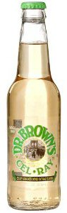

Sunday, April the 3rd, 2011
back to: title, date or indexes

Ludicrously obsessed as I am by the Kennedy assassination, my current reading is Vincent Bugliosi's Four Days In November (2007), an extraordinarily detailed narrative of the events in Dallas forty-eight years ago. Bugliosi, famed as the prosecutor in the Manson murders, has won great respect for his “precise and definitive” account, “put[ting] all the pieces together”, carefully documenting his tale with thousands of footnotes referring to primary sources.
Yet here I am, on page 310, when we have arrived at 1.50 AM on Saturday 23 November, and I am ready to toss the book across the room in exasperation. Why?
“Most of Dallas is asleep when Ruby finally enters the KLIF building after Russ Knight gets back from City Hall and opens the door. Several of the guys on duty are glad to see Jack's big paper sack full of corned-beef sandwiches and soft drinks. “I figured you guys would be hungry,” Jack tells them, “and I brought these up for you.” Knight and DJ Danny McCurdy were intrigued by Doctor Black's celery tonic in its peculiarly shaped bottle and expensive-looking gold foil, which neither of them had ever seen before. Whoever heard of a soft drink with celery in it? Jack explains that it's something you normally get only in New York and is especially pleased when McCurdy thinks it's the best soft drink he's ever had.”
There is, of course, no such drink as “Doctor Black's celery tonic”. Bugliosi is confusing it with Doctor Brown's celery tonic, also known as Cel-Ray. If he cannot get that right, if he muddles Black with Brown, how can we trust anything he says in this bulky doorstop of a book? Such inaccurate flimflam is enough to have me signing up to the absurd and paranoid Oliver Stone-Jim Garrison theories about the case.
McCurdy may have asked “Whoever heard of a soft drink with celery in it?” but a more pertinent question is surely “Whoever would have thought that a soft drink with celery in it would prove so crucial a factor in the Kennedy assassination?”